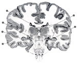

The Limbic Lobe
Instructions:
The lab module has three parts: a Tutorial, one or more Neuroanatomy Maps, and Quiz corresponding to each map. On the Neuroanatomy Map, use your mouse to highlight and identify the various areas of the human brain. Each question on the Quiz will ask you to select a brain area or structure. You may review these Tutorials, Neuroanatomy Maps, and Quizzes as often as you like.

Tutorial
Interactive Module(s)
Limbic Lobe - Neuroanatomy Map | Quiz
Limbic Lobe Structures on Coronal Slice - Neuroanatomy Map | Quiz